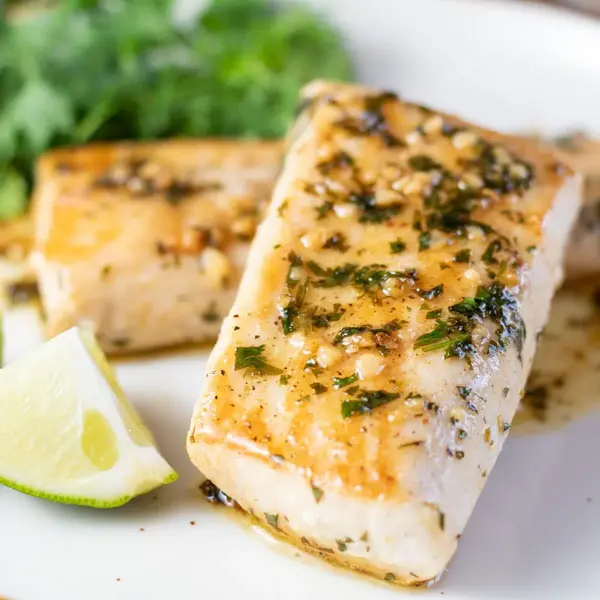
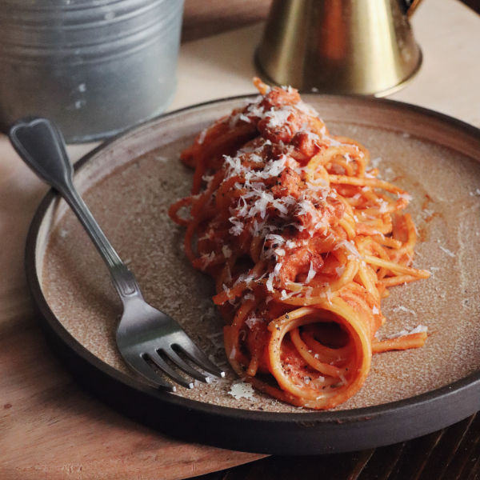
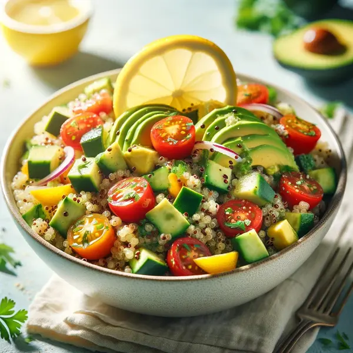
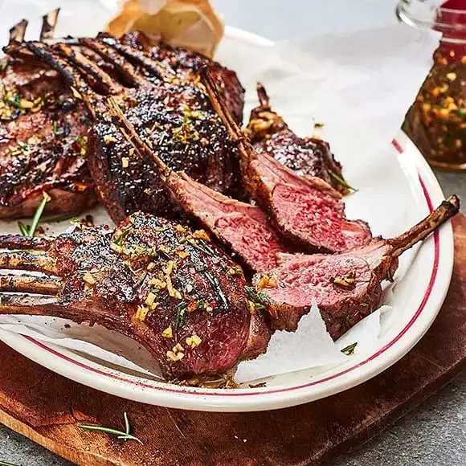
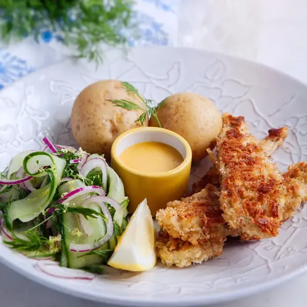
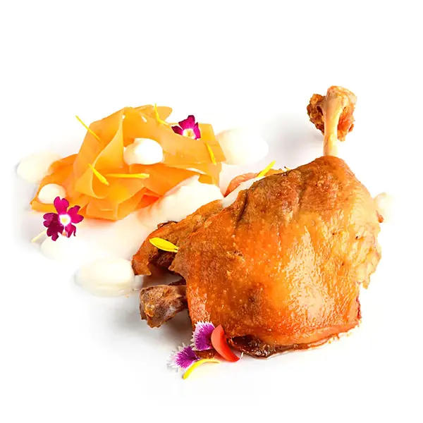

Lunchmeny

Smörstekt torsk med citron- och dillsås - 150 kr

Krämig pasta carbonara med parmaskinka - 120 kr

Vegetarisk quinoasallad med rostade grönsaker - 100 kr
Middagsmeny

Grillad lammracks med rosmarinsås och karamelliserade rotfrukter - 150 kr

Pankostekt hälleflundra med saffransrisotto och smörad spenat - 120 kr

Confiterad ankbröst med apelsinsås och gratinerad potatisterrin - 100 kr